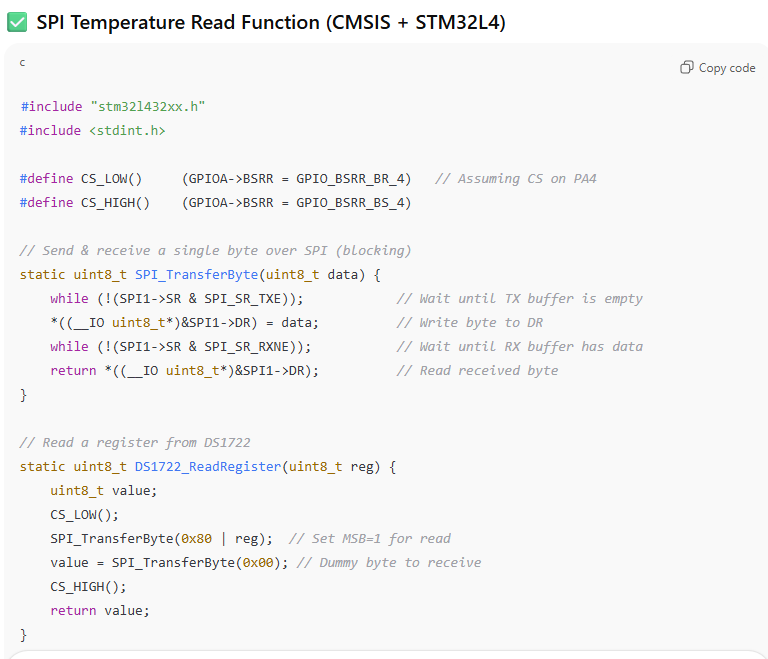

Lab 6 Report
Introduction
In this lab, we used the SPI communication protocol to have our MCU interface with a DS1722 temperature sensor in order to measure temperature, along with sending a webpage over to our computers through UART. Essentially, we built a simple Iot Device, where we interface with the temperature sensor over SPI. And, the MCU interfaces with teh ESP8266 over UART. There is a simple HTML page that displays this information. The website allows the user to control an onboard LED, as well as change the resolution to which the temperature sensor is measuring in.
Design and Testing Methodology
In terms of the design, it was really imporant to understand how to SPI communication protocol works between the MCU and our temp sensor. Our temperature sensor has a very specific way of communicating with the controller, so we had to make sure our communication was compliant with this. First, I had to read the reference manual closely to understand how to setup SPI communication on our MCU, and make sure everything was configured in the way we wanted, i.e. baud rate, data size, FIFO size, fully duplex, etc. Then, I found compliant pins that I could use on the MCU for SPI - SCLK, CIPO/MISO, COPI/MOSI. And I decided to have a manually controlled CS pin, so I could use any pin for this. Once I had my pins and SPI setup, I had to write my SPI communication functions. This one was simple, because it was just pushing data on the line and returning what comes out. So for this, I had to wait until the transmit buffer was empty, then send the data, then wait for the receiving buffer to be empty, and then return whatever data the temperature sensor sends out. In terms of the temperature sensor, the datasheet mentioned that it requires CS to go high for any communication, and after CS goes high it expects an address, and then if it was a write address it expects the data next, and if it was a read address you can send dummy bits over to create enough clock pulses to get out the data. For reference, 0x80 is the write address to configure the temp sensor, and 0x00 is the read address for the config reg, 0x02 reads the MSB of the temp sensor, and 0x01 reads the LSB for the temp sensor. So first, when a request comes in from the user to change the resolution from the website, we set CS to 1, then send 0x80 to the SPI, and then the configuration with the resolution, nd then CS back to low. For reading the MSB for example, we would do - CS high, send(0x02), msb_value = send(dummy bits, ex 0x00), CS low. Once this protocol was setup, I just had to wire everything in hardware which entailed connecting the appropriate pins on my MCU (SCLK, CIPO/MISO, CPOI/MOSI), to the appropriate pins on the DSI722 (SDO, SDI, SCLK, CS, etc). In order to test, I first tried writing to the configuration register with setting a resolution, and then reading from it to make sure I was ablw to read and write correctly to the temp sensor. Once this was working, I knew that from my while loop writing to the temp sensor to configure the the resolution would work. But, to debug issues I had here, I put all my signals on an oscilloscope to see that CIPO/MISO was changing as data was being passed through , and same for COPI/MOSI. I then used the logic analyzer mode to easily map out all my signals to see my transactions. Once I saw the bits I was sending happening on COPI/MOSI, and then on the next output of data of CIPO/MISO reflecting that, I knew it was correct. I also tested it from my HTML by changing the configrations, and printing out what it was saving, as wella s the config register, to make sure I was updating with button presses.
Technical Documentation:
The source code for the project can be found in the associated Github repository
Schematic
The image above shows the schematic of our system, with the SPI transaction lines connected between the MCU and DS1722, and UART communication linked through RX and TX.
Results and Discussion
I was able to accomplish all of the prescribed tasks in this project. I also met all the intended design objectives, and was able to check off all the components in the spec, along with the excellence components.
The design performs as expected, as it updates the temperature when I change the temperature applied on the sensor. It also updates the temperature with the correct resolution when I change it from the website, and also controls the LED as well from the website.
Figure 2 above shows the logic analyzer trace for a write transaction to the configuration register at address 0x80. The configuration was set for 8-bits, hence 0xE0 was send as the write data.
Figure 3 above shows the logic analyzer trace for a write transaction to the configuration register at address 0x80. Here, the configuration was set for 12-bits, hence 0xE8 was send as the write data.
Figure 4 above shows the logic analyzer trace for a read transaction. First, we can see the confguration register is being read at address 0x00, and we see on the next data output of MISO, we see 0xE0 hence this is an 8-bit configuration. We then see the read for address 0x02, the MSB for temperature, which then gives us 0x18, and then a read at 0x01, the LSB of the temperature sensor which gives us 0x00 as expected, since it is an 8-bit resolution so only the top 8-bits have data, and the bottom 8-bits are 0 (16 bits total for the SPI->DR (data register)).
Conclusion
The design works as expected, and works as a simple IoT device. Through an HTML page, the user is able to control an onboard LED, as well as control how temperature is calculated from the temperature sensor, by changing the resolution. When these values are updated/selected, it displays on the website as well for the users to see. The temperature sensor communication with the MCU happens through SPI, and sending the website over to to the ESP8266 chip, and capturing the form requests and sending it to the MCU happens through USART. One shortcoming is that the website updates the current selection on the following/next interaction with the websote, creating a one-page refresh lab. I would have to look into maybe havign an update button which refreshes the page, or wen somethign is pressed, refersh the page twice automatically in order to display the information to the user. I spent 15 hours working on this lab.
AI Prototype Summary
Figure 5 shows the result of prompting ChatGPT to give me a nice looking website in order to display my termperature resolution form, as well as the buttons for controlling the leds, and displaying the temperature. It looks quite nice actually, and it only took like 2 prompts in order to create this output. It works well, looks a lot better than what it was before, and the output makes sense.

Figure 6 and 7 above shows the result of the prompt to ask AI for the function to interact with the DS1722 temperature sensor. Something I noticed in this, is it knew to dereference the SR1->DR register in order to write to it - something I would never have figured out, and would have spent hours debugging. Otherwise, the reading from the register didn’t seem correct - as it wrote the write address to the SPI transaction, instead of the read address. It identified all the correct registers, however it used them in the wrong way. In order to read, it was also sending the write register which is not needed, it only needs to send the read register (0x02 or 0x01), and then the dummy bits after that. But otherwise, it had the right conceptual idea for all the calculations. I am not entirely sure if the final calculation to convert the temperature to celcius is correct, but otherwise everything else looks okay.